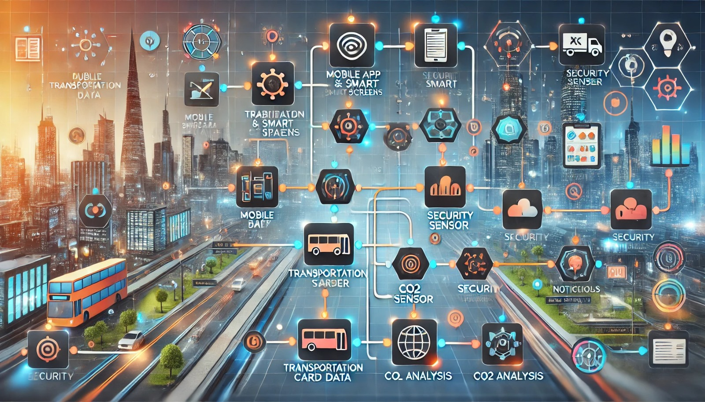

Projelerim
TÜBİTAK ve TEKNOFEST projeleri başta olmak üzere çeşitli alanlarda geliştirdiğim projeler.
TEKNOFEST

İHA Tasarımı ve Simülasyonları
Sabit kanatlı 150 cm, 4 kg ağırlığında İHA tasarımı ve simülasyonu.
TEKNOFEST

Otonom Hedefleme Taret Sistemi
YOLOv8 ile hedef tespiti ve Unity simülasyon destekli otonom atış sistemleri.
TÜBİTAK

Toplu Taşıma Yapay Zeka Sistemi
Yoğunluk, güvenlik ve hava kalitesi izleme amacıyla çok modüllü mobil uygulama.
TEKNOFEST

5G Tabanlı Konumlandırma Sistemi
5G sinyal ölçümleriyle hibrit konum tahmin algoritması geliştirme projesi.
Kişisel
Finans Yönetim Sistemi
Full-Stack web uygulaması olarak geliştirilen kişisel finans yönetim sistemi.
TEKNOFEST

NLP Projeleri - Açıkhack Finalist
BERT ve LSTM modelleriyle metin sınıflandırma, NER ve duygu analizi.
TEKNOFEST

EYS - Engelli Yardım Sistemi
İşaret dili çevirisi ve yön rehberliği sağlayan mobil uygulama.
TÜBİTAK

İnekWiz - Akıllı Çiftlik İzleme
Gerçek zamanlı veri toplama ve raporlama sistemi.